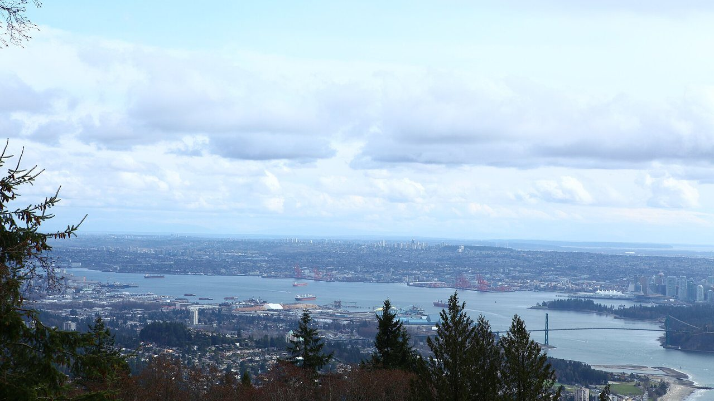

Race, Cypress Mountain

Behind
Best +0:01
371W
Target 418 W-47 W
- Cadence
- 87rpm
- Heart
- 140bpm
- Speed
- 26.5km/h
Work4 of 13
2:25
Next: · 6:00 at level 18
+5.5%
302 m climbed
5.65 km
16
Resistance / 32
Solo races your best-time ghost: position reads Ahead or Behind, and solo alone gets a Pause button. Frozen at 13:35.